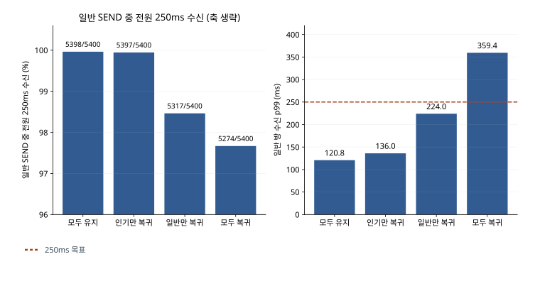
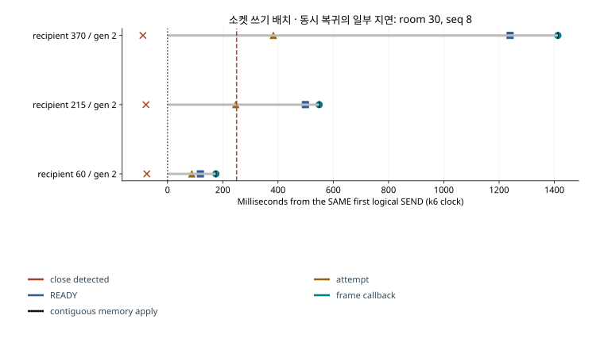
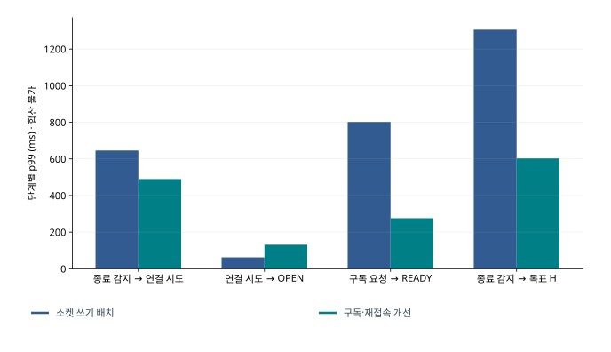
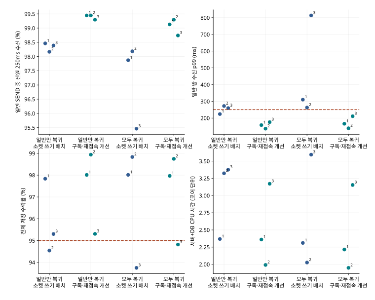
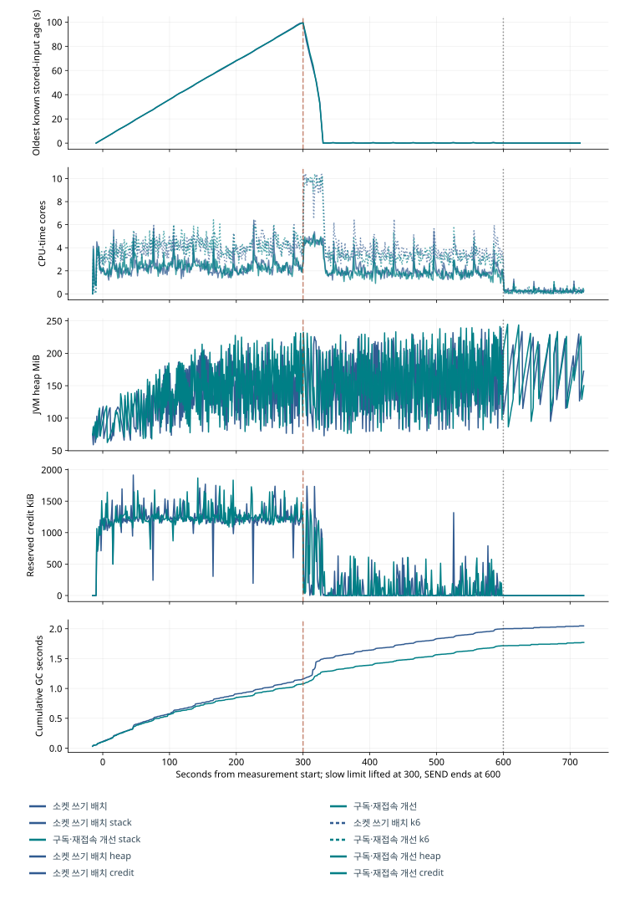
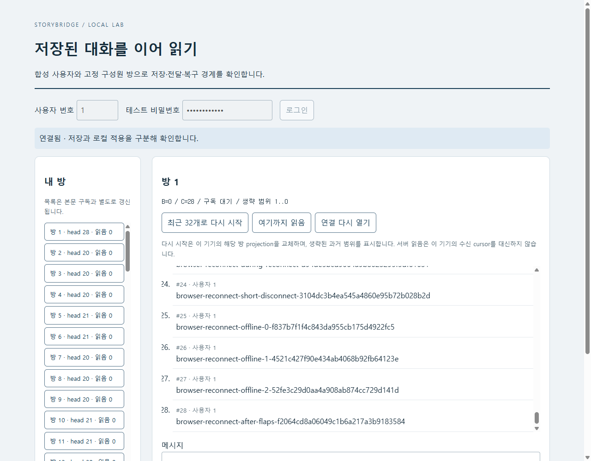

STORYBRIDGE · 설계와 검증
같은 메시지가 일부 수신자에게만 늦었던 이유
집단 재접속의 초기 구독 큐 경합과 클라이언트 재시도 대기 분석
이전 10분 시험에서 일반 방 SEND 5,400건은 모두 저장됐는데도 137건은 예정 수신자 전원에게 250ms 안에 도착하지 못했다. 그중 130건은 같은 메시지를 받은 일부 수신자만 늦었다. 저장 이후의 공통 경로만으로는 이 차이를 설명하기 어려워, 연결별 상태를 추적하며 인기 방만 재접속할 때, 일반 방만 재접속할 때, 두 집단이 함께 재접속할 때를 대조했다.
집단 재접속에서는 초기 구독 큐의 대기가 늘었고, 일반 수신자 자신의 재시도 대기도 수신을 늦추고 있었다. 서버에서는 초기 권한·순번 조회를 단일 SELECT로 바꿔 DB 왕복과 큐 점유를 줄이고, 브라우저에서는 안정적으로 연결된 뒤 첫 단절에만 짧은 재시도 대기를 적용했다. 장애가 계속되면 backoff를 유지하도록 해, 재접속을 앞당긴 대가가 반복 연결 시도의 폭주로 이어지지 않게 했다.
이전 관측과 별도로 전후 각 3회 비교했으며, 부하는 500개 연결을 30초마다 재접속시키면서 HTTP로 초당 45건을 600초 동안 전송하도록 구성했다. 이 조건에서 일반 방 전체 SEND 중 최초 전송 시도 후 250ms 안에 예정 수신자 전원에게 순서대로 도착한 비율은 k6 메모리 수신 기준으로 95.46~98.19%에서 98.74~99.30%로 높아졌다. 느린 연결의 복구 실패는 남았고, 마지막 반복의 전체 저장 수락률은 94.82%로 목표로 가정한 95%에 미달했다.
현재 채택한 단일 서버 구현의 전후 비교다. 직전 소켓 쓰기 배치 구현과 자원 예산·입력·동시 단절 조건을 동일하게 적용했다. 최종 구현의 비교 결과
집단별 재접속 대조 조건
HTTP SEND 초당 45건, 측정 600초, 워밍업 15초, 추가 관측 120초, 본문 512byte, 수신 연결 500개를 고정했다. 인기 방 400개 연결 중 100개에 적용당 40ms 제한을 두고 측정 300초에 해제했다. 일반 방 100개 연결은 31개 방에 분포한다. 전체 연결은 31명의 다중 탭 구성으로, 500명의 서로 다른 사용자가 아니다. 입력의 80%는 인기 방(초당 36건), 20%는 일반 방(초당 9건)이다. 전량 수락 시 연결별 수신 의무는 인기 방 초당 14,400건, 일반 방 약 29.04건이다. 느린 연결이 설정상 최대인 초당 25건씩 적용하더라도, 인기 방에 초당 36건이 저장되면 이 100개 연결의 잔량은 합계 초당 약 1,100건씩 늘어난다. 이 계산은 실제 증가량의 상한이 아니다. 따라서 실제 backlog는 저장 수락량과 적용량으로 따로 확인했다.
gateway heap768MiB·MySQL buffer256MiB, 두 프로세스의 합계 CPU quota3333/10000(호스트 18 논리 CPU 중 약 6 개 CPU 시간), 전역 credit32MiB·표현 cache16MiB, 초기 작업 2worker/128queue·읽기 2worker/4permit·쓰기 6permit·Hikari12 를 유지했다. k6 송신 512VU는 이 quota 밖에서 같은 노트북을 공유한다. 전용 물리 코어·물리 HA 시험이 아니다. MySQL8.4.13·Java21.0.13·k6 2.3.0, loopback·TLS/압축 비활성이다.
| 조건 | 인기 방 | 일반 방 | 판별 질문 |
|---|---|---|---|
| 모두 연결 유지 | 연결 유지 | 연결 유지 | 단절 없는 대조 |
| 인기 방만 재접속 | 30 초마다 재접속 | 연결 유지 | 다른 방 복구가 계속 연결된 사용자에게 주는 영향 |
| 일반 방만 재접속 | 연결 유지 | 30 초마다 재접속 | 일반 수신자 자신의 단절 |
| 모두 재접속 | 30 초마다 재접속 | 30 초마다 재접속 | 동시 복귀의 추가 비용 |
좁은 화면에서는 표를 좌우로 이동할 수 있습니다. 수치와 단위는 원본의 반복별 값을 유지했습니다.
각 논리 입력 ordinal을 같은 방·사용자·본문 크기로 매핑하고, 수신 시나리오 원점의 30 초 배수로 강제 단절을 예약해 인기 방만 재접속/모두 재접속의 인기 방, 일반 방만 재접속/모두 재접속의 일반 방 일정을 맞췄다. 실제 타이머 실행 지연과 함께, 연결이 이미 없어서 계획된 close를 실행하지 못한 기회와 예기치 않은 종료도 별도 기록한다. 첫 600 초 순서는 모두 연결 유지→인기 방만 재접속→모두 재접속→일반 방만 재접속이었고, 최종 반복은 조건과 후보 순서를 교대했다.
주 지표는 일반 방 전체 논리 SEND 중 저장되고 모든 예정 수신자가 최초 SEND 시작 후 250ms 안에 연속 수신한 비율로, 거절·미확정·연결이 없던 중의 SEND·늦은 수신도 분모다. STORED p99≤150ms, 일반 수신 p99≤250ms, 실제 연결 시도→READY 당시 방의 목표 순번 H까지 연속 수신≤30 초와 기존 전체 95%·일반 99% 수락률 가정을 유지했다. 주 비율에 사후로 새로운 통과선을 만들지 않고 차이를 %p로 제시한다. 이 대규모 지표는 k6 의 메모리 연속 적용이며 IndexedDB/SQLite commit 성능이 아니다.
일반 방 재접속과 초기 구독 큐 경합
| 소켓 쓰기 배치 조건 | 일반 방 SEND 중 전원 250ms 수신 / 5,400 | 일반 p99 ms | 일반 수락 | 일부만 / 전원 늦음 | 초기 구독 BUSY |
|---|---|---|---|---|---|
| 모두 연결 유지 | 5,398 · 99.963% | 120.77 | 100.000% | 2 / 0 | 0 |
| 인기 방만 재접속 | 5,397 · 99.944% | 136.00 | 100.000% | 3 / 0 | 376 |
| 모두 재접속 | 5,274 · 97.667% | 359.39 | 100.000% | 108 / 18 | 1618 |
| 일반 방만 재접속 | 5,317 · 98.463% | 224.00 | 100.000% | 68 / 15 | 0 |
좁은 화면에서는 표를 좌우로 이동할 수 있습니다. 수치와 단위는 원본의 반복별 값을 유지했습니다.
| 구간 | 인기 방만 복귀한 영향 %p | 일반 방만 복귀한 영향 %p | 일반 방 복귀에 인기 방 복귀를 더한 영향 %p | 동시 복귀의 추가 영향 %p |
|---|---|---|---|---|
| 전체 구간 | -0.0185 | -1.5000 | -0.7963 | -0.7778 |
| 느린 제한 유지 | +0.0000 | -1.5556 | -0.9630 | -0.9630 |
| 제한 해제 후 | -0.0370 | -1.4444 | -0.6296 | -0.5926 |
좁은 화면에서는 표를 좌우로 이동할 수 있습니다. 수치와 단위는 원본의 반복별 값을 유지했습니다.
인기 방만 복귀한 영향은−0.0185%p로, 이 한 쌍에서는 계속 연결된 일반 방에 큰 악화가 관측되지 않았다. 일반 방만 복귀한 영향은−1.5%p, 동시 복귀의 추가 차이는−0.7778%p였다. 한 번의 2×2 비교이므로 영향이 없다는 결론보다는 후속 분석 대상을 좁히는 근거로 삼았다. 일반 방만 재접속할 때는 수신 p99 224ms가 목표를 충족해도 83 개의 SEND가 전원 250ms를 놓쳤다. 그래서 일반 방의 수신 경험은 p99와 메시지별 전원 수신 비율을 함께 기준으로 삼아 판단했다. 모두 연결 유지의 2 개 일부 수신자만 늦은 사례도 제한 해제 부근에 발생했으므로, 일부만 늦다는 현상 자체는 클라이언트 단절의 증거가 아니다.
동시 재접속에서 추가된 대기는 전체 읽기 예산보다 초기 구독 작업 큐에서 확인됐다. 일반 방만 재접속할 때와 모두 재접속할 때의 일반 재시도 대기 중앙값은 350/351ms로 비슷했지만 SUBSCRIBE→READY p99 는 84→774.03ms였다. 모두 재접속의 클라이언트 SUBSCRIBE BUSY1,618 건은 서버 io_rejected1,618 건과 일치했고 전역 READ_BUDGET 거절은 0 이었다. 이 HTTP SEND 부하에서 Gateway.io는 초기 SUBSCRIBE를 처리하므로 거절 출처를 해당 큐로 좁힐 수 있었다. 기존 권한 COUNT·F/H 조회는 올바른 REPEATABLE READ snapshot을 만들었지만 세션 설정·종료 왕복까지 포함해, 500 개 연결이 함께 돌아올 때 2worker/128queue를 오래 점유했다.
모두 재접속의 늦은 일반 수신 236 건은 SEND 시점 기준 재시도 대기 151, 단절 전 미적용 57, 구독 대기 26, handshake1, READY 이후 1 로 분류됐다. 이는 서로 다른 상태에서 시작한 표본 수이지 지연 시간의 원인별 기여율이 아니다. 일반 방만 재접속/모두 재접속의 각 단계 p99 는 표본 분포가 달라 전체 지연의 기여율 계산에는 사용하지 않았다.

연결 상태별 수신 지연 추적
일반 방은 roomSeq·수신자 index/user·연결 generation·구독 epoch를 연결해 최초 논리 SEND→frame callback→연속 cursor 적용을 기록했다. 재접속은 종료 감지→재시도 예약→실제 연결 시도→OPEN→SUBSCRIBE→READY→첫 미수신 적용→고정 H 완료를 회차 원장에 남기되, READY에서 이미 H에 도달한 회차는 그 시각에 완료한다. 연결 실패·다음 단절 전 미완료·시험 종료도 분모에 남기며, 이후 회차가 성공하더라도 해당 회차의 실패는 유지한다.
사용자 단절 시간은 종료 감지부터 H 도달까지, 기존 30 초 복구는 실제 시도부터 H 도달까지다. 신규 송신 종료 후 전체 잔량 해소 시간은 별도로 측정했다. k6 의 같은 clock domain에서 얻은 epoch 시각끼리만 연결하고, Java queue/query/callback은 같은 프로세스의 nanoTime 경과시간으로 계산하며, 브라우저 performance.now 값과 서버 시각을 직접 빼지 않았다. frame callback은 커널 패킷 도착 시각이 아니므로 그 이전 지연을 서버만의 비용으로 단정하지 않는다.
상세 메시지 원장은 일반 방에 한정하고 32 개씩, 연결 이벤트는 16 개씩 유한 묶음으로 출력한다. 인기 방은 연결 전이·첫 적용과 5 초 진행 관측만 수집한다. 60 초 trace on/off 진단의 스택 CPU는 253.94/251.62%, k6 는 409.72/406.24%, peak RSS는 859.5/808.76MiB였다. 짧은 인접 실행만으로 계측 오버헤드를 정확히 추정하기는 어려워, 최종 비교에는 모두 같은 계측을 적용했다.

초기 구독 SELECT와 재시도 정책 변경
실제 Store·Gateway·브라우저 메서드 발췌에 구현을 정리했으며, 핵심 SQL과 처리 순서는 다음과 같다.
초기 구독 큐를 키우기보다 작업 하나의 DB 왕복을 줄이기 위해 권한·floor·head를 한 statement snapshot으로 읽도록 바꿨다. 각 identity는 여전히 권위 DB에서 확인하며 새로운 cache나 권한 공유는 추가하지 않았다. 이때 보관 범위 검사는 공유 읽기가 내부 보정한 base가 아닌 ORIGINAL cursor를 floor/head와 대조해, 보정된 값을 승인된 cursor로 받아들여 보관 초과를 숨기는 일이 없도록 했다.
SELECT r.head, r.floor_seq
FROM room r JOIN membership a
ON a.room_id = r.id AND a.user_id = ?
WHERE r.id = ?;
Page page = batchHistory(who, room, cursor, 0);
if (cursor < page.floor() - 1) throw RESYNC_REQUIRED;
if (cursor > page.head()) throw INVALID_CURSOR;
who.check(); // callback에서도 identity·closing·구독 객체를 다시 검사MySQL의 consistent read 규칙에 따라 한 SELECT의 membership·F/H는 같은 snapshot으로 읽고, 본문은 기존 연속 복구 경로에서 읽는다. 실제 실행 계획과 권한 없음·floor 아래 cursor·미래 cursor·유효 floor를 DB 원장과 대조했다. 큐·worker·permit 확대는 없다.
서버의 초기 구독 대기를 줄여도 클라이언트 재시도 대기가 남아 수신 목표를 충족하지 못했다. 실제로 초기 구독 조회만 바꾼 60 초 모두 재접속 pilot에서 초기 큐 거절은 0, 일반 SUBSCRIBE→READY p99 는 53ms로 줄었지만 기존 재시도 대기 중앙값은 351.5ms였고 수신 p99 는 263ms였다. 따라서 서버 변경만으로 전원 250ms 경험이 해결됐다고 보지 않고, 다음 비교에는 실제 브라우저의 재시도 정책도 포함했다.
초기 구독·재접속 개선은 실제 브라우저와 k6 가 같은 retry-policy.js를 사용하되, READY가 10 초 이상 안정적으로 유지된 뒤의 첫 단절에는 25~325ms의 무작위 대기를 한 번 허용한다. 연결 실패·READY 전 종료·짧은 READY는 500~1000ms,1000~2000ms,2000~4000ms,최대 2500~5000ms의 지수적 대기로 진행한다. 이때 OPEN만으로 실패 횟수를 초기화하지 않으며, 브라우저는 Math.random, k6 는 수신자별 고정 seed를 사용한다. RFC6455 의 재접속 backoff 설명은 무작위 초기 대기와 반복 실패 시 증가의 근거이며, 안정 READY10 초는 이 제품에서 택한 정책이다.
첫 재시도를 무조건 앞당기면 연결 burst가 초기 큐와 발생기 타이머를 다시 압박했다. 25~225ms pilot은 모두 재접속 p99 194.6ms였지만 초기 큐 거절 90 건·타이머 지연 p99 166.53ms와 전체 수락 95.59%를 남겼다. 그래서 다음 시험 전에 최대 대기를 100ms 늘린 25~325ms를 선언했다. 수정 pilot은 모두 재접속 p99 168.65ms·큐 거절 0·타이머 지연 p99 92.31ms·전체 수락 97.96%였으며, 이후 이 정책을 고정해 600 초 본 비교를 수행했다. 재시도 분산 폭을 조정한 것으로, 강제 단절의 동시성이나 250ms 목표를 바꾼 것은 아니다.
소켓 쓰기 배치의 실제 브라우저는 기존 250ms 지수 대기+0~200ms jitter와 OPEN 초기화를 사용했고, 기존 k6 는 100+index%500ms 고정 대기였으므로, k6 에서 얻은 개선 폭을 실제 브라우저 사용자 지연의 정확한 개선 폭으로 환산할 수는 없었다. 초기 구독·재접속 개선은 실제 브라우저에 구현한 정책을 부하 모델에도 적용한 비교다. 서버 변경의 효과는 legacy 대기를 유지한 초기 구독 조회 개선 pilot으로 분리했고, 제품의 원자 적용·지속 장애 동작은 실브라우저에서 별도로 검증했다.

600초 독립 3회 비교 결과
일반 방만 재접속하는 조건과 모두 재접속하는 조건에서 전후를 각각 600 초씩 독립 3 회 비교했다. 일반 방만 재접속할 때 전체 SEND 중 저장되고 예정 수신자 전원이 250ms 안에 받은 비율은 98.167~98.463%에서 99.296~99.444%로 높아졌고, 일반 수신 p99 는 224~272ms에서 136.54~175.77ms로 줄었다. 모두 재접속할 때는 같은 비율이 95.463~98.185%에서 98.741~99.296%로 높아졌으며, p99 는 262.77~813.08ms에서 139~211ms로 줄었다. 모든 비교에서 일반 방의 5,400 건은 전량 저장됐다. 아래 표는 실행별 값이며 범위의 양 끝을 서로 빼서 개선율로 계산하지 않는다.
| 조건·후보·반복 | 일반 방 SEND 중 전원 250ms 수신 | 수락 전체 / 일반 | p99 전체 STORED / 일반 수신 ms | 미완료 복구 회차 | drop / SEND 미확정 / 최종 누락 |
|---|---|---|---|---|---|
| 일반 방만 재접속 / 소켓 쓰기 배치 / 1 · 재사용 | 5317/5400 · 98.463% | 97.837% / 100.000% | 37.00 / 224.00 | 0 | 0 / 0 / 0 |
| 일반 방만 재접속 / 초기 구독·재접속 개선 / 1 · 재사용 | 5370/5400 · 99.444% | 98.011% / 100.000% | 37.00 / 158.00 | 0 | 0 / 0 / 0 |
| 모두 재접속 / 소켓 쓰기 배치 / 1 · 신규 | 5285/5400 · 97.870% | 98.015% / 100.000% | 37.00 / 310.00 | 780 | 0 / 0 / 0 |
| 모두 재접속 / 초기 구독·재접속 개선 / 1 · 신규 | 5353/5400 · 99.130% | 97.967% / 100.000% | 37.00 / 166.00 | 780 | 0 / 0 / 0 |
| 모두 재접속 / 초기 구독·재접속 개선 / 2 · 신규 | 5362/5400 · 99.296% | 98.748% / 100.000% | 31.00 / 139.00 | 780 | 0 / 0 / 0 |
| 모두 재접속 / 소켓 쓰기 배치 / 2 · 신규 | 5302/5400 · 98.185% | 98.833% / 100.000% | 30.00 / 262.77 | 780 | 0 / 0 / 0 |
| 일반 방만 재접속 / 초기 구독·재접속 개선 / 2 · 신규 | 5370/5400 · 99.444% | 98.941% / 100.000% | 28.00 / 136.54 | 0 | 0 / 0 / 0 |
| 일반 방만 재접속 / 소켓 쓰기 배치 / 2 · 신규 | 5301/5400 · 98.167% | 94.541% / 100.000% | 66.75 / 272.00 | 0 | 0 / 0 / 0 |
| 일반 방만 재접속 / 소켓 쓰기 배치 / 3 · 신규 | 5313/5400 · 98.389% | 95.300% / 100.000% | 59.00 / 259.54 | 0 | 0 / 0 / 0 |
| 일반 방만 재접속 / 초기 구독·재접속 개선 / 3 · 신규 | 5362/5400 · 99.296% | 95.307% / 100.000% | 61.00 / 175.77 | 0 | 0 / 0 / 0 |
| 모두 재접속 / 소켓 쓰기 배치 / 3 · 신규 | 5155/5400 · 95.463% | 93.748% / 100.000% | 77.00 / 813.08 | 800 | 0 / 0 / 0 |
| 모두 재접속 / 초기 구독·재접속 개선 / 3 · 신규 | 5332/5400 · 98.741% | 94.819% / 100.000% | 65.00 / 211.00 | 801 | 0 / 1 / 0 |
좁은 화면에서는 표를 좌우로 이동할 수 있습니다. 수치와 단위는 원본의 반복별 값을 유지했습니다.
일반 방 SEND의 최초 시작→저장 결과 확정 p99 는 소켓 쓰기 배치 39.00~97.01ms, 초기 구독·재접속 개선 35.00~86.00ms였다. 전체 SEND의 STORED p99 와 구분한 보조 지표이며, 거절·미확정은 수락률과 메시지 전체 성공 분모에 남는다.
첫 전체 재접속 비교 도중 외부 앱 정리 작업이 있었으므로 해당 원본과 간섭 종료 시점이 불확실했던 실행을 최종 비교에서 제외했다. 정리 이후에도 전후 구현 모두의 서버·k6 CPU가 함께 높아지는 구간이 관측됐다. 첫 반복은 앞선 구현과 개선 구현을 연속으로 다시 측정한 쌍으로 대체했고, 교체 계획은 새 결과를 보기 전에 고정했으며, 간섭 이후의 이른 개선 구현 결과는 보조 근거로 남겼다. 외부 앱 삭제가 메모리 peak 증가의 직접 원인이라는 뜻은 아니다. 간섭 기록 · 비교 쌍의 교체 근거
일반 방만 재접속하는 첫 반복은 외부 앱 정리 전의 전후 한 쌍을 재사용했다. 같은 조건의 2·3 회차와 최종 전체 재접속 비교는 정리 후 실행이므로, 앱 예산은 같아도 공유 호스트의 상태에는 차이가 있었을 수 있다. 실행된 15 개 하네스의 소스·정책·입력·자원 설정과 독립 감사를 대조했고, 성능 통과 여부로 재사용 대상을 고르지 않았다. p99는 실행별로 계산했으며 여러 반복의 표본을 합치지는 않았다.

| 조건·반복 | 초기 구독·재접속 개선−소켓 쓰기 배치 전체 %p | 제한 중 %p | 제한 해제 후 %p |
|---|---|---|---|
| 일반 방만 재접속 / 1 | +0.9815 | +1.0000 | +0.9630 |
| 일반 방만 재접속 / 2 | +1.2778 | +1.0737 | +1.4820 |
| 일반 방만 재접속 / 3 | +0.9074 | +1.0002 | +0.8145 |
| 모두 재접속 / 1 | +1.2593 | +1.2958 | +1.2227 |
| 모두 재접속 / 2 | +1.1111 | +1.2215 | +1.0007 |
| 모두 재접속 / 3 | +3.2778 | +3.6283 | +2.9270 |
좁은 화면에서는 표를 좌우로 이동할 수 있습니다. 수치와 단위는 원본의 반복별 값을 유지했습니다.
개선 후 연결을 끊지 않고 600 초 동안 측정했을 때는 일반 방 5,399/5,400 건(99.9815%)이 전원 250ms, 일반 수신 p99 121ms, 전체 수락 98.219%·일반 100%로 기존 목표를 통과했다. SEND 미확정·발생기 drop·최종 누락은 0 이었다. 소켓 쓰기 배치 모두 연결 유지의 역사적 한 번과 CPU 성능의 엄밀한 쌍 비교로 취급하지 않는다.
인기 방 복구·수락률·자원 사용량
일반 방만 재접속 3 회차의 성공 저장은 개선 전 25,731/개선 후 25,733 건으로 거의 같았고, 모두 재접속 3 회차는 개선 후가 289 건 더 저장하면서 일반 방 SEND 중 전원 250ms 수신 비율이 3.278%p 높았다. 모두 재접속 1 회차/모두 재접속 2 회차는 개선 후가 각각 13/23 건 적게 저장한 점도 함께 봐야 한다. 모두 재접속의 전체 MySQL Questions는 개선 전 843,735~873,062 회, 개선 후 667,255~701,689 회로 줄었으며, 이는 초기 연결·관측 구간을 포함한 전체 누계다. 같은 측정 수신량으로 나눈 스택+k6 CPU초/백만 수신은 모두 재접속 1 회차 457.51→445.12, 모두 재접속 2 회차 384.34→380.35, 모두 재접속 3 회차 737.84→656.90 였다. 호스트 CPU 시간의 큰 변동이 있어 이를 측정한 조건의 CPU 차이로 해석한다. 일반 방만 재접속에서는 개선 후의 k6 peak RSS가 최대 1,157.86MiB로 개선 전 최대 1,066.24MiB보다 컸다. 설정 예산을 늘리지는 않았지만 발생기 메모리 사용량은 증가했다. 모두 재접속 최종 잔량은 모두 0 이고 유입 종료 후 0~32ms에 해소됐지만, 이전 회차 실패는 유지한다.
SEND 미확정도 별도 실패로 유지했다. 개선 후 전체 재접속 3 회차에서 인기 방 SEND 1 건은 최초 POST가 TCP 연결 거절(error1212), 같은 키 결과 조회가 429 READ_BUDGET으로 끝났다. 고정된 하네스는 조회 거절 뒤 재시도를 이어가지 않았고 종료 receipt도 없었지만, 이를 당시 확정 거절이나 성공으로 바꾸지는 않는다. 일반 방 수신 지연이 개선된 뒤에도 이 SEND 미확정은 남았으므로, 판단에 사용한 키·hash·응답 순서·사후 receipt 원본을 함께 기록했다.
개선 후 전체 재접속 3 회차의 복구 실패 801 회는 느린 수신자의 다음 단절 전 미완료 786 회와 OPEN 이전 연결 실패 15 회(일반 4·인기 빠른 8·인기 느린 3)다. 후자의 실제 연결 시도는 측정 345.361~345.381 초에 몰렸고 위 HTTP 연결 거절과 같은 시기였다. SYN/accept 큐나 커널 사건은 직접 추적하지 않아 세부 OS 원인을 확정하지 않는다. 실패 회차와 다음 회차의 연결을 보존했으며 다음 성공이 실패 분모를 지우지 않는다.
| 조건·후보·반복 | CPU 스택 / k6 (% core) | RSS peak 스택 / k6 MiB | 인기 방 수락 | 느린 인기 방 실패 / 시도 | 수신자별 p99>250ms 최소~최대 p99 ms |
|---|---|---|---|---|---|
| 일반 방만 재접속 / 소켓 쓰기 배치 / 1 | 236.86 / 423.39 | 974.57 / 1,023.59 | 97.296% | 0 / 0 | 31 / 100 75.12~486.83 |
| 일반 방만 재접속 / 초기 구독·재접속 개선 / 1 | 236.07 / 416.66 | 872.33 / 1,054.21 | 97.514% | 0 / 0 | 0 / 100 66.62~207.72 |
| 모두 재접속 / 소켓 쓰기 배치 / 1 | 231.13 / 413.55 | 1,059.36 / 1,088.68 | 97.519% | 780 / 2000 | 47 / 100 90.08~692.94 |
| 모두 재접속 / 초기 구독·재접속 개선 / 1 | 221.55 / 405.31 | 1,059.11 / 1,033.63 | 97.458% | 780 / 2000 | 3 / 100 90.45~284.56 |
| 모두 재접속 / 초기 구독·재접속 개선 / 2 | 194.90 / 346.10 | 1,055.67 / 1,044.35 | 98.435% | 780 / 2000 | 2 / 100 63.24~262.74 |
| 모두 재접속 / 소켓 쓰기 배치 / 2 | 202.62 / 344.66 | 1,030.00 / 1,102.83 | 98.542% | 780 / 2000 | 38 / 100 64.16~591.66 |
| 일반 방만 재접속 / 초기 구독·재접속 개선 / 2 | 199.13 / 340.26 | 1,002.05 / 1,157.86 | 98.676% | 0 / 0 | 0 / 100 65.70~247.94 |
| 일반 방만 재접속 / 소켓 쓰기 배치 / 2 | 332.29 / 596.06 | 970.04 / 1,066.24 | 93.176% | 0 / 0 | 45 / 100 131.07~545.88 |
| 일반 방만 재접속 / 소켓 쓰기 배치 / 3 | 337.51 / 599.10 | 979.08 / 1,024.01 | 94.125% | 0 / 0 | 36 / 100 104.16~559.85 |
| 일반 방만 재접속 / 초기 구독·재접속 개선 / 3 | 317.08 / 570.87 | 969.67 / 1,016.48 | 94.134% | 0 / 0 | 0 / 100 95.75~249.80 |
| 모두 재접속 / 소켓 쓰기 배치 / 3 | 359.37 / 623.08 | 1,066.93 / 1,041.39 | 92.185% | 800 / 2000 | 74 / 100 144.51~1,499.42 |
| 모두 재접속 / 초기 구독·재접속 개선 / 3 | 315.33 / 572.00 | 1,061.98 / 1,008.88 | 93.523% | 789 / 2003 | 19 / 100 123.13~401.91 |
좁은 화면에서는 표를 좌우로 이동할 수 있습니다. 수치와 단위는 원본의 반복별 값을 유지했습니다.
CPU100%는 논리 CPU 한 개의 시간이다. 스택은 gateway+MySQL이며 k6·보조 관측 비용과 구분한다. 동일 quota는 전용 코어 보장이 아니고 공유 호스트·열·주파수의 완전한 통제도 아니다. 발생기 drop0 만으로 수신 event loop의 지연까지 0 이라고 판단하지 않고, 재시도 타이머 예정→실행, handshake·frame callback과 서버 큐 지표를 따로 읽는다. 처리량으로 나눈 CPU 비용도 최종 집계에 있으며, 측정 중 실제 메모리 수신 건수 기준이다.
느린 인기 방의 제한 중 미완료 회차는 여전히 실패다. 유입보다 느리게 적용하도록 설정한 동안의 물리적인 잔량 증가를 서버 starvation과 구별하되 분모에서 지우지 않는다. 제한 해제 뒤 새 메시지가 계속 들어오는 동안 고정 H 도달·backlog 나이 감소와 마지막 잔량 해소를 확인한다. 최종 잔량 0 을 근거로 이전 30 초 회차가 성공했다고 바꾸지 않는다.

브라우저 재접속·원자 적용 회귀 시험
실제 Chrome에서 이전 generation의 적용을 멈춘 채 연결을 바꾸고 다시 풀어도 연속 cursor와 원장이 일치했다. 초기 구독·재접속 개선의 30 초 네트워크 단절에서는 9 회 시도,12 초 OPEN 후 READY 전 종료에서는 2 회 시도였고 close→다음 attempt 대기는 3.1~4.3 초였다. 단순 시도 수만 보면 브라우저 close handshake 자체가 느린 경우를 놓칠 수 있어 대기 구간을 직접 검사했다. projection·cursor를 함께 쓴 IndexedDB 트랜잭션을 실제 abort해 둘 다 rollback됐으며,28 개 저장 메시지의 필드·hash·seq와 로컬 원장이 일치하고 페이지 재시작 후 같은 generation/cursor로 복원됐다.
별도 실제 UI 시험은 offline에서 pending SEND를 먼저 IndexedDB에 보존하고, 서버 commit 뒤 응답 유실을 주입했으며, 독립 receipt 조회로 저장을 확인해도 UI pending을 성공 처리하지 않았다. 다음 자동 재접속에서 같은 키를 재전송해 DB는 정확히 1 건이고, UI가 receipt를 받은 뒤에만 pending이 지워졌다. 브라우저 복구 결과 · pending·응답 유실 결과. 이 시험에서 확인한 것은 실제 UI의 복구 동작이며, 500 개의 내구 수신 처리량은 측정하지 않았다.

초기 구독 조회 개선의 신규 grant 경계와 초기 구독·재접속 개선의 13 개 핵심·6 개 확장·동시 head snapshot·cache 권한/retention 회귀를 수행했으며, 저장·멱등·권한·commit 응답·구독 credit/세대·ACK 유실·SQLite 원자 적용·재시작·실제 blocked TCP 회수를 포함한다. 최종 25~325ms 변경은 클라이언트 대기 폭뿐이며 서버 35 개 class byte가 초기 구독 조회 개선 및 앞선 초기 구독·재접속 개선과 동일함을 artifact 대조로 확인했다. 해당 정책과 브라우저 검사는 최종소스로 다시 수행했다. RabbitMQ·수신 버퍼 개선의 broker·다중 gateway 시험은 이전 구성에서 수행했으며, 이번 초기 구독·재접속 개선을 통합한 분산 검증은 수행하지 않았다.
채택 결과와 미달 항목
이번 변경은 일반 방 사용자가 재접속할 때의 수신 지연을 줄인 결과로 채택했다. 최종 비교에서는 일반 방만 재접속할 때와 전체가 재접속할 때 모두, 매 반복의 기한 내 전원 수신 비율이 높아졌다. 개선 대상을 좁힌 초기 2×2 비교에서 인기 방만 재접속한 영향은 0.0185%p 감소였지만, 일반 방 자체의 재접속은 1.5%p 감소, 두 집단의 동시 재접속은 추가 0.7778%p 감소였다. 단계별 원장과 초기 큐 거절을 대조해 재시도 대기와 초기 구독의 DB 왕복을 바꿨으며, 서버 쿼리만 수정한 pilot과 브라우저 정책까지 적용한 최종 비교를 분리했다. 큐·worker·admission 상한, 동시 단절 일정과 지연 목표는 유지했다. 다만 연결 거절과 SEND 미확정은 남았으므로, 일반 방 재접속 지연 개선을 이유로 채택하되 모든 SLO 충족이나 더 높은 입력률의 처리 능력까지 확인한 것은 아니다.
- 개선 후 전체 재접속의 제한 중 closed-before-target는 780/780/786 회다. 개선 후 전체 재접속 3 회차에는 OPEN 이전 연결 실패 15 회(일반 4·인기 빠른 8·인기 느린 3)가 추가되어 전체 801/10,015 회 실패다. 다음 시도에서 모두 복구됐어도 실패 분모를 줄이지 않는다. 최초 종료부터 이어 잰 일반 사용자 단절 최대는 1,355ms였다.
- 개선 후 전체 재접속 3 회차의 전체 수락 94.818%는 95% 가정에 못 미친다. 인기 방 SEND1 건은 최초 TCP 연결 거절 뒤 결과 조회도 READ_BUDGET으로 거절되어 미확정이다. 종료 receipt 부재를 당시 확정 거절로 바꾸지 않는다. 같은 시각 연결 실패의 세부 SYN/accept·커널 원인은 직접 계측하지 않았다.
- 개선 후 전체 연결을 재접속시킨 세 번의 시험에서, 일반 방 수신 기록을 모두 합쳐 계산한 p99는 매회 250ms 이하였다. 하지만 수신자별로 계산하면 p99가 250ms를 넘긴 수신자는 각각 3명, 2명, 19명이었다. 전원 250ms를 놓친 SEND도 47/38/68 건 남았다. 주 성공 비율은 전후 차이를 보고했으며 별도의 통과 기준은 적용하지 않았다.
- 첫 후보 모두 재접속의 외부 앱 정리 간섭 원본과 의도적 중단 원본을 보존·제외했다. 정리 이후에도 공유 호스트의 CPU/주파수 상태를 연속 통제하지 못했으며, 단일 현재 전원 관측으로 과거 원인을 확정하지 않는다. 일반 방만 재접속 1 회차의 정리 전 쌍과 후속 실행을 섞어 하나의 p99 로 만들지 않는다.
- 이 장비·45 SEND/s·31 고유 사용자의 다중 탭 500 연결·HTTP SEND·loopback·600 초 조건이다. 최종 구현의 250/1,000 SEND/s 처리량, 500 고유 사용자 조건과 일·주 단위의 지속 동작은 검증하지 않았다. 이전 소켓 쓰기 배치의 601,000 건 CPU 비교와 고율 실패는 그 정확한 소스의 과거 근거다.
- k6 는 메모리 연속 수신이고 500 개의 영속 로컬 commit 성능이 아니다. SQLite/실브라우저 IndexedDB 검증은 별도 기능·장애 계약의 근거다. RabbitMQ·수신 버퍼 개선의 이전 두 gateway/broker 결과는 최종 단일 서버 개선을 통합한 분산 시험은 아니며, 물리 HA도 검증하지 않았다.
앞선 혼합 부하 분석에서는 메시지 1,810건의 연결별 수신 의무 601,000건을 신규 송신 없이 복구했다. 조회·표현 재사용·소켓 배치 적용 전후 각 3회에서 서버와 MySQL 합산 CPU 시간 중앙값은 180.34초에서 140.52초로, k6까지 포함하면 428.55초에서 375.84초로 줄었다. 이 수치는 이번 초기 구독·재접속 변경을 적용하기 전의 별도 실험이다. 짧은 저장 대기는 작은 방의 즉시 거절을 줄였지만 인기 방에서는 팬아웃을 늘려 일반 방 지연을 악화시켰다. 이번에도 admission이나 큐를 늘리기보다 DB 왕복과 재시도 대기를 줄였으며, 빠르게 돌아온 연결이 만드는 순간 부하까지 비교했다. · 이전 혼합 부하 분석
측정 원본과 범위
전체 실행 부록에는 원본·실행 명령·환경·소스·하네스 SHA·실패 판정·발생량과 재사용 여부가 있다. 하위 실행 실패·필수 원본 누락·정합성 감사 위반은 캠페인이 nonzero로 종료되도록 구현했다. 반면 성능 목표 미달은 측정 자체의 실패와 구분해 유효한 실패 실험으로 남겼다. 원인별 변경 전 가설 · 후보 artifact 고정 · 최종 독립 반복 전체 집계.
추가 실험 조건
StoryBridge는 고정 구성원의 채팅에서 MySQL commit 이후에만 저장 성공을 응답한다. 같은 키·본문의 재전송은 같은 receipt를 반환하고, 수신자는 방의 연속 cursor를 내구 로그와 대조해 누락을 복구한다. 일반 방 수신 지연을 다른 방의 집단 복구, 본인 재접속, 두 집단의 동시 재접속으로 나눠 분석했다.
소켓 쓰기 배치 구현의 이전 600 초 시험에서는 일반 방 5,400 건이 모두 저장됐지만 전원 250ms 도착은 5,263 건이었다. 늦은 137 건 중 130 건은 같은 메시지의 일부 수신자만 늦었다. 이 관측만으로 클라이언트 문제라고 판단하지 않고, 연결별로 세대·재시도·구독·writer 상태가 달라 서버와 발생기의 영향도 함께 분석했다. 기존 실패 원본과 입력률 경계는 변경하지 않았다.
제약 사항
HTTP 45 SEND/s·600초·loopback에서 k6 연속 메모리 수신을 측정했다. 500연결은 31명 고유 사용자의 다중 탭이다. 최종 구현의 더 높은 송신률 및 500명 영속 수신 성능은 미검증이다.